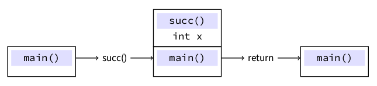
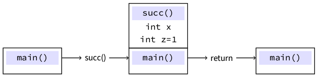
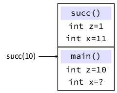
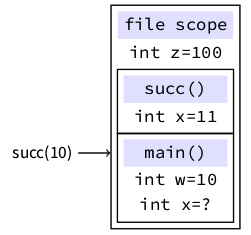
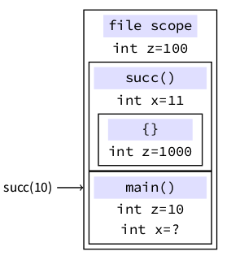
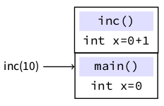

Funzioni
1 Definizione di funzione
Una funzione è un costrutto che associa un corpo( una sequenza di dichiarazioni e statement ) ad un *identificatore*(il nome della funzione).
Le funzioni possono accettare 0 o piu’ parametri che vengono inizializzati con gli argomenti usati al momento della chiamata (tempo di esecuzione).
Le funzioni possono avere un return statement che definisce il valore “prodotto” dalla funzione e restituito al chiamante.
Il tipo speciale void viene usato per specificare nessun parametro/valore di ritorno.
ESEMPIO: Scrivere una funzione che dato un numero intero restituisca il numero successivo.
#include <stdio.h> int succ(int x) { return x + 1; } int main() { printf("%d\n", succ(10)); return 0; }
Ma cosa succede davvero?
Possiamo dire che ogni funzione, quando invocata, crea un proprio ambiente(activation record) in memoria (organizzata come una pila o stack) per gestire i parametri e le variabili dichiarate nel corpo della funzione. 
Se il codice
#include <stdio.h> int succ(int x) { int z = 1; return x + z; } int main() { int y = 10; printf("%d\n", succ(y)); return 0; }
Otteniamo: 
Importante:
- L’ambiente di una funzione viene creato al momento dell’invocazione e distrutto all’uscita dal corpo della funzione (alla fine del blocco o al return). Le variabili (parametri dichiarate) all’interno di una funzione cessano di esistere al termine di questa. Chiamate diverse useranno memoria diversa. Le vairabili dichiarate in una funzione e i suoi parametri non sono accessibili da altre funzioni.
- Gli argomenti usati per invocare una funzione sono espressi e possono essere arbitrariamente complessi.
- Il valore risultante dall’espressione usata come argomento (nell’esempio semplicemente “y”) viene copiato nella variabile che memorizza il parametro della funzione.
- Se una fuinzione ha un parametro chiamato x, non significa che deve essere invocato con una variabile di nome x come argomento.
2 Best practices
- Mai scrivere lo stesso codice in punti diversi del nostro software! Definire una funzione e invocarla quando serve.
- Decomporre un problema in sotto-problemi semplici e scrivere una funzione per ciascuno.
- Disaccoppiare visualizzazione da computazione. Scrivere funzioni specializzate per risolvere problemi specifici e altre funzioni per la visualizzazione o in generale l’interazione con l’utente
3 Scope
Ci sono 2 scope principali:
- File scope: identificatori dichiarati all’esterno di qualunque blocco sono visibili dal punto della dichiarazione fino alla fine del file.
- Block scope: identificatori dichiarati nella dichiarazione di una funzione o all’interno di un blocco sono visibili dal punto della dichiarazione fino alla fine del blocco corrispondente.
I blocchi possono essere annidati (nasted)
#include <stdio.h> int succ(int x) { int z = 1; x = x + z; return x; } int main() { int z = 10; int x = succ(z); printf("%d\n", x); return 0; }
11
Nell’esempio sopra quando nella funzione succ scriviamo x = x + z :
- L’identificatore z fa riferimento alla variabile z definita nella funzione succ (block scope)
- L’identificatore x fa riferimento alla variabile e parametro x definito nella funzione succ (block scope)
- Non c’è modo di usare un identificatore per accedere alle variabili x e z definite nella funzione main. I due scope sono “indipendenti” e “invisibili” l’uno dall’altro: questo permette di scrivere funzioni “di libreria” senza temere interferenze con il resto del software.

#include <stdio.h> int z = 100; int succ(int x) { x = x + z; return x; } int main() { int w = 10; int x = succ(w); printf("%d\n", x); return 0; }
110
Nell’esempio sopra quando nella funzione succ scriviamo x = x + z:
- L’identificatore x fa riferimento alla variabile e parametro x definito nella funzione succ (block scope)
- L’identificatore z non trova riscontro con nessuna variabile nello scope della funzione succ, quindi viene cercata una variabile definita nel file scope ( o scope globale ) dove è in effetti definita una variabile z che viene quindi letta
- Nel caso z non fosse stata presente nemmeno nel file scope, avremmo avuto un errore a tempo di compilazione
- Si, si possono dichiarare variabili fuori dalle funzioni; queste vengono tipicamente chiamate variabili globali

#include <stdio.h> int z = 100; int succ(int x) { x = x + z; { int z = 1000; x += z; } return x; } int main() { int z = 10; int x = succ(z); printf("%d\n", x); return 0; }
1110
Nell’esempio sopra quando nella funzione succ scriviamo x += z:
- L’identificatore x non è definito nel blocco interno alla funzione (nested scope) ma è definito come parametro x della funzione succ (block scope)
- L’identificatore fa riferimento alla variabile z definita nel blocco interno alla funzione (nested scope) con valore 1000
- È possibile avere diversi scope annidati l’uno dentro l’altro; le variabili dichiarate in queti scope “muoiono” alla fine dello stesso, e se hanno lo stesso identificatore di altre variabili in scope esterni “nascondono” quest’ultime rendendo impossibile accederle tramite il loro identificatore
- La dichiarazione int z = 10 nella funzione main non modifica il contenuto della variabile z nel file scope, ma crea una nuova variabile nello scope della funzione stessa
- Non è invece possibile dichiarare due variabili con lo stesso identificatore nello stesso scope (sarebbero indistinguibili), e otterremmo un errore a tempo di compilazione

4 Best practices
Mai usare variabili globali. Essendo accessibili da tutte le funzioni definite nel file, non possiamo fare nessuna assunzione sul loro contenuto (es. assumere che una variabile sia positiva) e questo mette a rischio il buon funzionamento delle singole funzioni.
Ci sono delle eccezioni, ma non vi pentirete di limitare l’uso delle variabili globali.
Domanda posso implementare la funzione incrementa, che data una variabile intera la incrementa di 1?
#include <stdio.h> int inc(int x) { x = x + 1; } int main() { int x = 0; inc(x); printf("%d\n", x); return 0; }
Quella sopra non può essere l’implementazione di cui abbiamo bisogno:
- Nell’invocazione di inc(x) viene valutata l’espressione x e una copia del valore viene compiato nella variabile “locale” dell’ambiente della funzione inc. È la copia ad essere incrementata ma non la variabile originale.
